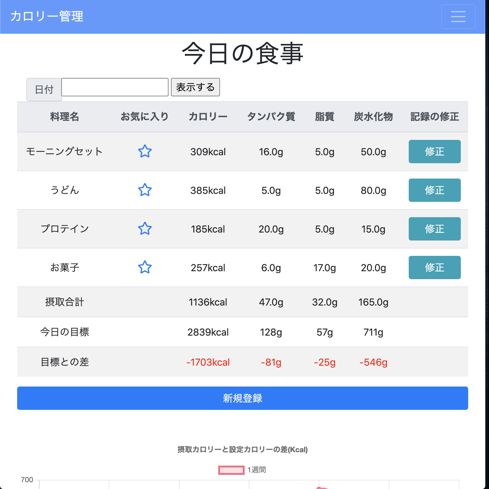
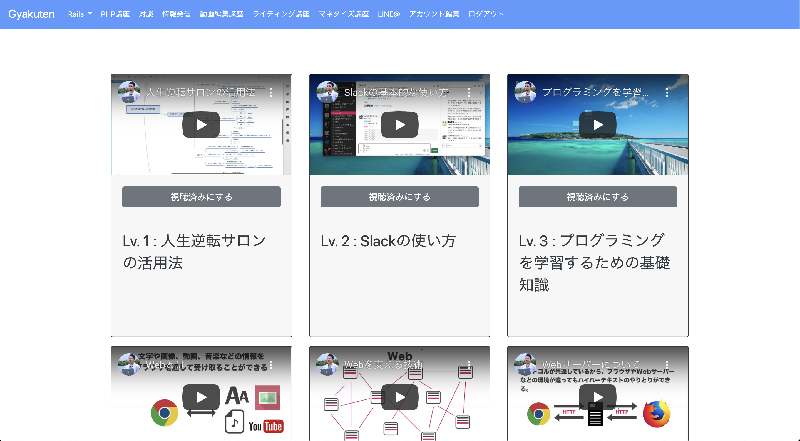
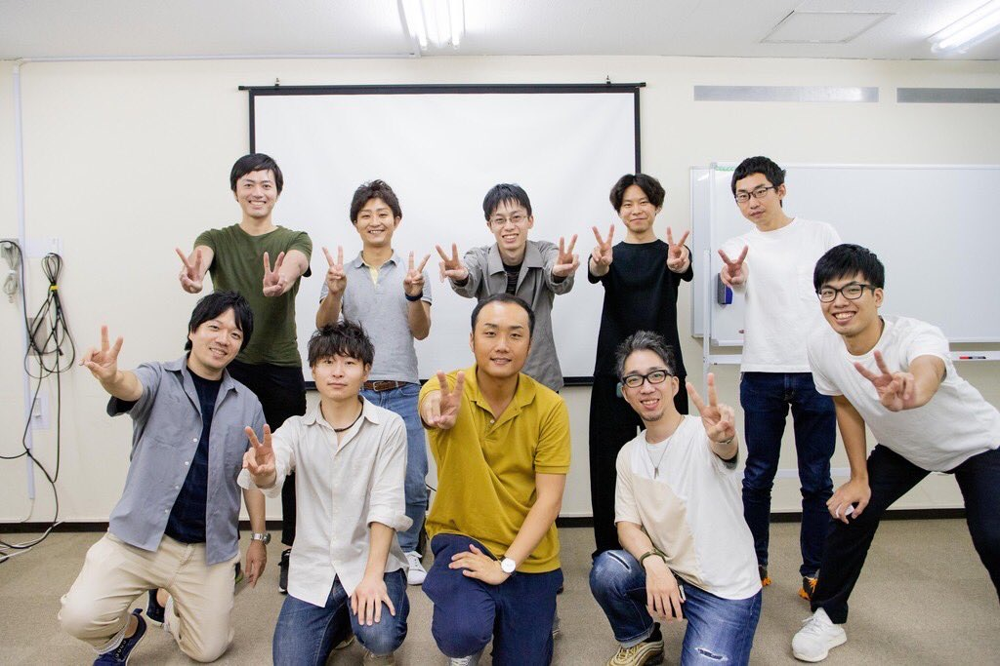
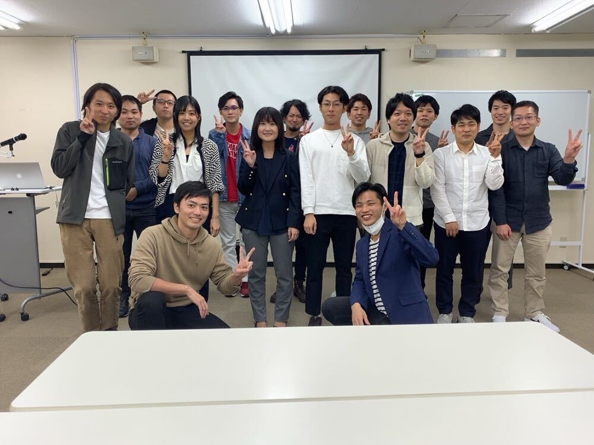
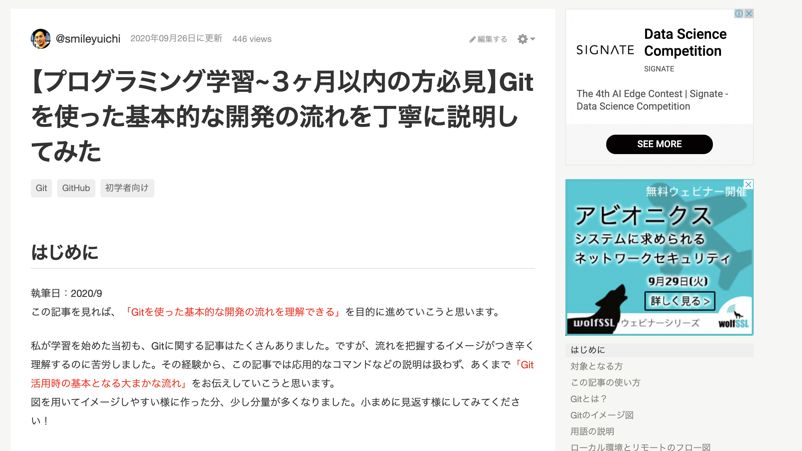

田中裕一 Portfolio Site
about me

パーソナル情報
昭和60年10月13日生まれ / 35歳
経歴
- ・平成24年3月 ： 龍谷大学 理工学部 情報メディア学科 中退
-
・平成24年5月 ： 家電量販店での携帯通信端末の販売促進会社 就職(正社員)
この会社に入社した理由は、大学を中退し自己肯定感を無くしかけていた私にとって、会社のポリシーである「圧倒的No.1を目指す」が魅力的だったからです。
精一杯真剣に業務に取り組んだ結果、約1年後に主任昇格、その半年後に係長という役職を頂くことが出来ました。
他の社員と比べて早いスピードで昇格させて頂いたのですがその理由には、お世話になった方々の御膳立てがあった事は勿論でしたが、 成果として担当店舗の成績向上に貢献できた事があったからです。(実績としては、平成25年度下半期の家電量販店内通信端末新規販売台数全国2位、店舗スタッフ増員8→14名となりました。)
取り組んだ具体的な内容は、店舗内での業務方針を個人からチームにする事を提案・実践した事です。 以前までは個人で成績を競う風潮があり、些細な揉め事が頻発しておりました。
方針をチームに変更してからは無駄な動きが減り、訴求方法にバリエーションが増え、これまでの販売台数にプラスして獲得できる仕組みを構築する事が出来ました。
うまくいかない事の方が圧倒的に多いですが、その度に修正を繰り返して成功に導く為の取り組みを粘り強く継続できます。 - ・平成26年9月 ： 携帯通信端末の販売促進会社 退職
-
・平成27年2月 ： 家庭用医療機器の製造販売を行なう会社と業務委託契約(自営)
新しいチャレンジがしたいと思い、転職しました。
家庭用医療機器の販売及び店舗運営(数値管理を含む)
店舗の場所選び・広告・集客・接客・販売・アフターフォローを一貫して行いました。
とにかく足を使って集客を行い、ほぼ毎日休む事なく働きました。この経験が今の前向きで強いストレス耐性を作ってくれたものだと感じております。 実績としては、10ヶ月間の業務で販売台数29台、全国78位/120人中でした。
多くの変化を求め前向きに行動してきた結果、辛い事を乗り越えた先には必ず成長が待っている事を強く実感できる 貴重な経験となりました。
- ・平成27年12月 ： 家庭用医療機器の製造販売を行なう会社 業務委託契約を解約
- ※平成28年1月〜平成28年8月の期間に関しましては営業会社で正社員としてアウトバウンドの提案営業に従事致しました。
-
・平成28年9月 ： 家庭用医療機器の販売・企画・開発を行なう会社 就職(正社員)
前職での経験を活かし、転職しました。
スポーツクラブ内での家庭用医療機器販売
1ヶ月毎にスポーツクラブを移動し、常に新規顧客の獲得に注力してきました。
また、前職の経験から販売手法を参考にし、新入社員に対しての研修資料作成プロジェクトに参画させて頂きました。 また実績としては、入社初月より営業予算に対して300%達成で新人賞獲得、平成30年第2四半期予算280％達成、新入社員の年間売上20％アップが主な実績です。
平成30年7月に営業部主任に昇格致しました。
これまで自分の価値観を信じて、前向きに行動してきました。
自分が良いと信じて取り組んでいる事で誰かの人生が好転した時、喜んで頂けた時に仕事へのやりがいや充実感を感じます。 - ・令和2年3月 ： 家庭用医療機器の販売・企画・開発を行なう会社 退職
- ・現在転職活動中
なぜエンジニアを目指したのか
多くの人の日常にITサービスを提供して、劇的な改善体験と感動体験を共有したいと考える様になったためです。
前職在職中は仕事だけではなく、自己研鑽の素晴らしさに気付き様々な媒体を使って取り組む様になりました。
その中でプログラミングと出会い、興味を持ち学習を始めました。理解が進むにつれて、これまで行ってきた業務の中でプログラミング技術に置き換える事ができることを理解しました。
理解してからは「もっと知識と経験を増やす事ができれば、多くの方にたくさんの価値提供ができる」と毎日ワクワクしながら学習してきました。
また、学習を続けてきた中で一歩一歩着実に知識として蓄えられている感覚や論理的に物事を考える事が好きな私にとってはすごく楽しい時間となりました。
2020年に学習したプログラミングスキル
1月4日から現在までほぼ休む事なく継続して学習を続けています
- 1月4日〜2月19日( 24 日) ： HTML,CSS,Ruby基礎
- 2月20日〜4月30日( 50 日) ： PHP基礎
- 5月1日〜6月3日( 32 日) ： JavaScript,jQuery
- 6月4日〜現在（日） ： Ruby,Ruby on Rails
- 10月1日〜10月20日（20日）、Ruby on Railsの学習と並行してRuby技術者認定試験Silverの資格取得に向けて学習
- 10月22日〜（日）、Ruby on Railsの学習と並行してORACLE MASTER Bronze DBAの資格のため勉強中
※成果物については下記参照ください
どの様な業務をしたいか
多くの人の役にたつ画期的で面白いアプリの開発に携わりたいです。
その為に必要な言語やスキルを常に取り入れていける環境で働きたいです。
どの様なエンジニアになりたいか
「変化による価値を生み出し、多くの人の役に立つ」エンジニアになりたいです。
1.変化を起こす
今まで当たり前と思われていた事を疑い、改善案を考え、実行していきたいです。
新しい事に挑戦する事は刺激的ですし、そこから見えてくる新しい景色があると確信しています。それにより更に自分自身も大きく変化していける様に取り組みたいです。
2.価値を生む
価値とはそのサービスや商品を支持してくれる人の数だと考えています。
私が提供するサービスにより多くの人に影響を与え、喜んで貰える事を常に意識して行動していきます。
これまでも同じ想いで取り組んできましたが、ITテクノロジーの力で更に大きな価値を創造していきたいです。
3.影響力を持つ
私が挑戦の中で得た情報やスキルは、どんどん他者へ提供していこうと考えております。
それによって喜んで頂ける方がいれば、今後繋がりを持って面白い取り組みを一緒にしていけるのではないかと考えているからです。
そのために、SNSや技術記事を積極的に使って情報発信を積極的に行なっていこうと思います。
Ruby
Black Jack
制作したゲームの実行画面動画
こだわりポイント
- ・完全にRubyだけを用いて制作したゲーム
- ・コードを書く前にマインドマップを作成。設計書通りに制作
- ・実際にゲームを作る事で基礎文法の知識の定着が出来たと実感
- ・「A」が出たら1or11の都合の良い方を選択する、掛け金と点数に応じた支払いロジックを搭載する等、ブラックジャックの基本ルールに準拠
- ・本ゲームを基にした初学者向けのRuby学習教材を作成中
{kind=link}
Ruby on Rails
体重・食事管理アプリ
制作したアプリへのリンク
アプリの概要
- ・体重と食事内容を記録・管理するアプリ
- ・前職の経験から適切な食事管理ができていない方が多かったので、簡単に管理ができるアプリを作りたかった
- ・RailsのChart.jsとJavaScriptを使ってグラフ処理を実装して、より視覚的に理解しやすい仕様に致しました
ソースコード
GitHub(health_app)こだわりポイント
- ・初めてRailsでCRUD処理を実装して制作したアプリ
- ・AWSにアプリをデプロイしています。
- ・ログインしないと閲覧できないページやパスワードを暗号化して保存する等の処理を実装
- ・投稿したデータをModelで処理して、JavaScriptへ値を渡して画面に表示
- ・体重と摂取カロリーをグラフに表示。メモリ数値も表示データに応じて動的に変化
- ・Deviseを使用したログイン機能実装
使用したGem
- ・Chart.js：グラフ描写
- ・gon：データ受け渡し
- ・Devise：ログイン機能
- ・flatpickr：カレンダー機能
- ・bootstrap：レスポンシブデザイン
共同開発
共同開発で制作したクローンウェブサービス
{kind=link}
アプリの概要
- ・受講しているオンラインサロンのクローンウェブサービスの共同開発
- ・PM＋3人チームで制作
ソースコード・URL
GitHub(ソースコード)共同開発クローンウェブサービス(URL)
アドレス：test@example.com
パスワード：password
上記をコピーしてログインください。
注力したポイント
- ・所属するオンラインサロンのサロンオーナー（Rubyエンジニア）がPMとなり、サロンメンバー3名と合同でウェブサービス開発
- ・trelloでタスク管理致しました。挑戦したいタスクに参加し、完了したらタスクステータスを完了にする
- ・GitHubからCloneして、ローカル環境で作った機能をGitHubのリモートリポジトリへpushし、プルリクを送付。レビューして頂き問題無ければマージして頂く
- ・ウェブサービスの仕様書を作成し、メンバーと相談してブラッシュアップ
担当したタスク
- ・トップページの実装
- ・モデル・テーブルの作成
- ・AWSテキスト教材・Rails動画教材のrakeタスクの実装
- ・バリデーションの実装
- ・AWSテキスト教材一覧ページの実装
- ・質問集一覧の実装
- ・質問集詳細ページ、及び回答投稿機能を実装
- ・質問集ページの実装
- ・画像投稿機能の実装
Javascript
リバーシゲーム
制作したゲームの実行画面動画
アプリの概要
- ・Javascriptで動作するリバーシゲーム
- ・8×8 のゲーム盤上に，４個の石が初期状態としておいてある。
- ・黒先行で交互に自分の色の石を置いていく。
- ・石をおける場所は，自分の色の石で相手の石が１個以上挟める所である。挟む方向は，縦横斜めのどれでもよい。
- ・このとき，挟まれた石は，自分の色の石となる。
- ・石をおける場所がない場合には，パスをする。
- ・石をおける場所がある場合には，パスはできない。
- ・両者とも石をおける場所がなくなった場合，ゲームは終了する。
ソースコード
GitHub(reverse)こだわりポイント
- ・Javascript学習時に作成したゲーム
- ・プログラミング言語を基礎から学習したかった為、プリミティブなコーディングを意識しました。
Others
もくもく会の参加
参加したもくもく会の集合写真
こだわりポイント
- ・緊急事態宣言解除後、間も無くもくもく会に参加
- ・3時間30分もくもく会、30分は質問タイム。活発に意見の交換を行う
→チャンスがあれば即行動、挑戦しながら次の手を考える気質があります
オフライン勉強会主催
勉強会の集合写真とLT動画
{kind=link}
こだわりポイント
- ・Twitter上で知り合った仲間たちを集い、オフライン勉強会を企画
- ・「今すぐ使える情報を持って帰って頂きたい！」という想いから、事前に学習状況のアンケートを行なってから勉強会の内容を決定
- ・結果として16名の方に参加して頂けました
- ・4名の運営チームでは企画のコンセプトの定義、スケジュール管理、掲示物の内容について深く関わらせて頂きました
- ・私は「プログラミング学習〜3ヶ月目の方向け」に8分程度のLTで「効果的だったプログラミング言語勉強法」を発表
- ・第2回オンライン勉強会を主催予定
{kind=link}
Qiitaへ技術記事投稿
投稿したQiita記事の一部
{kind=link}
こだわりポイント
- ・これからプログラミング学習を始める方、初めて共同開発を経験される方に向けたGitの使用方法を画像付きで丁寧に解説
- ・できるだけ噛み砕いての解説、10章に及ぶ記事を作成
- ・今後も勉強した内容を積極的にアウトプットしていく
→新しい知識をインプットし、吸収してアウトプットする事を常に意識しています
IT資格取得への取り組み
こだわりポイント
- ・学習してきた知識を形として残すため、資格取得への取り組みを開始
- ・確実に結果を出すために一つずつ集中して資格取得を目指す
- ・今後も目標を決めて様々な資格取得に向けて取り組みます
- ・現在はORACLE MASTER Bronze DBAの資格取得に向けて学習を行っております
→新しい知識をインプットしアウトプットする事を常に意識しています
現在の実績
令和2年10月：Ruby技術者認定試験Silver 合格
Twitter毎日投稿
投稿したTwitterの一部
Tweets by smile_yuichiこだわりポイント
- ・その日の学習内容、学習時間をTwitterにて毎日投稿
- ・エンジニア 、プログラミング学習者と積極的にコミュニケーション
- ・勉強した内容を積極的にアウトプットしていく
→継続力、面識はないけれど同じ志を持った方との建設的な関係を築けるコミュニケーション能力があります